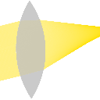

Симуляция оптических лучей
Бесплатное веб-приложение с открытым исходным кодом для создания и моделирования двумерных геометрических оптических сцен.
v1.0+20260925.9bb4c50
Этот проект, включая содержимое галереи, лицензирован под Apache License 2.0 и официально размещен на сайте PhyDemo (phydemo.app)(ранее на ricktu288.github.io). Исходный код [доступен на GitHub(/github), и вы можете внести свой вклад welcome to contribute. Если у вас есть вопросы или предложения, вы можете открыть issues или discussions на GitHub, или написать нам по адресу ray-optics@phydemo.app, если вы не пользуетесь GitHub.
Цитировать этот проект
Главный автор
- Yi-Ting Tu (код, Дизайн пользовательского интерфейса, галерея, модуль, zh-TW & zh-CN перевода)
Спонсоры
- Stas Fainer (код, галерея, модуль)
- Pedro Braga (pt-BR перевод)
- Fundacja Nauka i Wiedza (pl перевод)
- Hong Phong Kim (km перевод)
- Wei-Fang Sun (код, Дизайн пользовательского интерфейса)
- Paul Falstad (код, галерея)
- James Garrard (код, галерея)
- Brianna D'Urso (код)
- Levent Candan (tr перевод)
- Silvério Santos (pt-PT перевод)
- digitalgreenery (код)
- Scott Cheng (код)
- Ettore Atalan (de перевод)
- Qurbonsaid (uz перевод)
- Estyx Translations (es перевод)
- BlueCl0wn (de перевод)
- Lo-Chen Cheng (de перевод)
- Artuom Jdkd (ru перевод)
- Nguyễn Tiến Hưng (vi перевод)
- mcornillon (fr перевод)
- Rémi Berthoz (fr перевод)
- Eno Lak (fr перевод)
- Mars goshi (ar перевод)
- Rai Gar (es перевод)
- BoneNI (lo перевод)
- Michael Heise (de перевод)
- sadajun916 (ja перевод)
- Miguel Sánchez Palomino (es перевод)
- Savva (ru перевод)
- GLmontanari (код)
- Adrian Dorrington (код)
- Tharusha Theekshana (si перевод)
- Sepp Vogel (код)
- Bearia (ja перевод)
- Lorenzo Trevisanello (it перевод)
- lkjlkjlkj2012 (zh-CN перевод)
- cyamahat (код)
- kqakqakqa (код, zh-CN перевод)
- SukkaW (код)
- Abhinandan Kushwaha (код)
- Artyom Vasilenko (ru перевод)
- German Abelentsev (ru перевод)
- Nicolás De Francesco (es перевод)
- corentin N (fr перевод)
- Georges Le Goaster (fr перевод)
- A. Name (fr перевод)
- Clément Bourguignon (fr перевод)
- Ze-Yang Li (галерея)
- staclu (cs перевод)
- Martin Poitras (код)
- BoopSnoot (ru перевод)
- mahjsa (nl перевод)
- Wen Zhou (галерея)
- Cutivel Dimitri (fr перевод)
- Vincent Fan (код, Дизайн пользовательского интерфейса, галерея)
- Victory Science (галерея)
- Matteo Ricci Cipolloni (галерея)
- Mikhail Kochiev (галерея)
- Steve Stonebraker (галерея)
- krzysztofkrzeslak (Дизайн пользовательского интерфейса)
- Young-Gi Kim (ko перевод)
- chuangyu J (галерея)
- Georg Nadorff (галерея)
- Rene (галерея)
- josephernest (модуль)
- Alex (галерея)
- Liu Quanhong (галерея)
- Peter Becher (галерея)
- Mario Petitclerc (галерея)
- Matthias Guillon (галерея)
- Andreas Arnold (fr перевод)
- Leon Seidel (галерея)
- TamilNeram (ta перевод)
- sasavladimirov6 (ru перевод)
- Patrick Gretzki (de перевод)
- Rafael Bastin (fr перевод)
- Daniel Anya (галерея)
- Shahar Seifer (галерея)
- Ilya Vasilenko (ru перевод)
- Feng (модуль)
- vanapro1 (ru перевод)
- Florence (fr перевод)
- Alvise Di Rienzo (it перевод)
- Jan Pražák (cs перевод)
- gert jansen (nl перевод)
- Mohammed B (ar перевод)
- Richard Ruh (галерея)
- vimalrajrm (ta перевод)
- bri (галерея)
- Adrián González Rodríguez (es перевод)
- bird0cosmic (галерея)
- Márk Fazekas (hu перевод)
- Jorge Bodroghy Leite (галерея)
- Brad Goodman (модуль)
- DeadeyeSun (галерея)
- Dullayachat Boonudom (lo перевод)
- clearstripe (ko перевод)
- Yoyobuae (галерея)
- Ebubekir Furkan (tr перевод)
- Zain Kalim (галерея)
- Lakshmipathy R (kn перевод)
- Ricardo Avelino (pt-PT перевод)
- Spif (fr перевод)
- Sebastian Lummer (код)
- SeyhaLite (km перевод)
(Сначала участники GitHub; остальные отсортированы в хронологическом порядке.)
 Симуляция оптических лучей
Симуляция оптических лучей